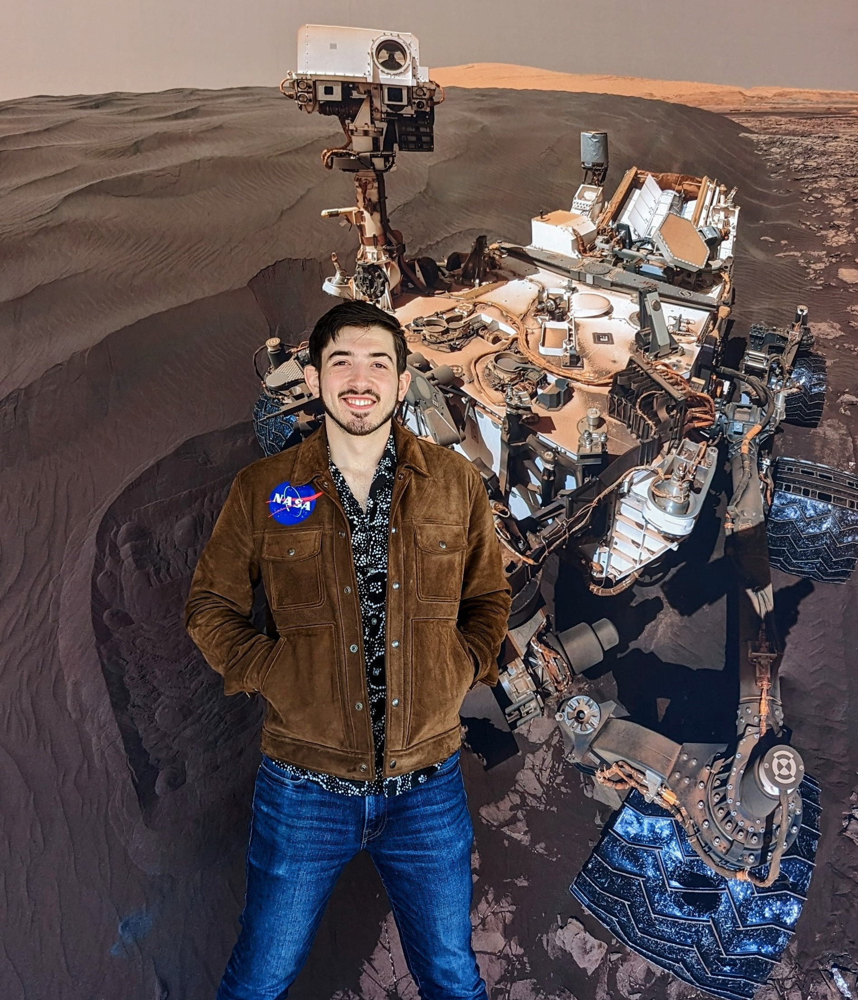

Precursors and pathways
Before a crystal existsSelf-assembly in solution, and the Ostwald ripening that decides which clusters survive it.
Minerals remember how they were made!Snacks also remember how they were made.
I am passionate about researching how biology influences mineral formation, from the molecular self-assembly into a lattice to the mesostructures resulting crystallites build together.Snack loving PhD candidate studying how biology steers crystallization, from ion-regulated molecular assembly to mesocrystalline organization.
I am a PhD candidate in Earth and Planetary Sciences at Rutgers University, working with Dr. Shaunna M. Morrison.
I am passionate about understanding how biology influences mineral formation across scales, from molecular self-assembly and crystal-lattice development to the mesostructures that emerge as crystallites assemble.

Using guanine as a model system, I investigate how cation identity and solution chemistry govern molecular self-assembly, beginning with ion-mediated G-wire formation and bundling. I then follow the development of these precursors into crystals through crystallization by particle attachment (CPA), followed by Ostwald ripening during crystal maturation. Parallel uric acid experiments serve as a comparative control, helping distinguish general ion-mediated assembly from guanine's Hoogsteen-mediated self-affinity. By isolating these processes in completely abiotic systems, I aim to identify fundamental mechanisms of particle assembly and crystal maturation with potential relevance across diverse biomineral systems.
Self-assembly in solution, and the Ostwald ripening that decides which clusters survive it.
The unit-cell geometry a given chemistry predicts, and the offset biology puts into it.
Even after proper powder preparation, biominerals keep a preferred orientation, and their peak widths differ too. Which reflections it lands on follows the fragment habit: plates on 00l, needles on hk0.
Crystals can grow not only through the addition of individual ions and molecules, but also through the attachment of larger, preassembled species. These pathways span molecular clusters, dense liquid precursors, amorphous particles, and nanocrystals. Their assembly and attachment can influence the structure and organization of the resulting solid.
My work on guanine and urate investigates the early stages of this process, where ion-regulated molecular assemblies and partially ordered precursors may shape subsequent crystallization.
![Pathways to crystallization by particle attachment, drawn as a dark fan. From a cloud of ions, atoms and molecules at the lower left, six routes arc up through increasingly ordered species: oligomers, complexes, droplets, amorphous nanoparticles, poorly crystalline nanoparticles and nanocrystals. From the nanocrystals, chains of nanocrystals join by oriented attachment, and nearly oriented chains rotate into registry. Amorphous and poorly crystalline particles fuse into an amorphous solid and polymers, and every route ends on a single bulk crystal at the lower right. A dashed arc shows monomer-by-monomer growth, which runs alongside attachment rather than being replaced by it, and a progress arrow runs along the bottom. Ions travel along each route in turn.](cpa-pathways.jpg)